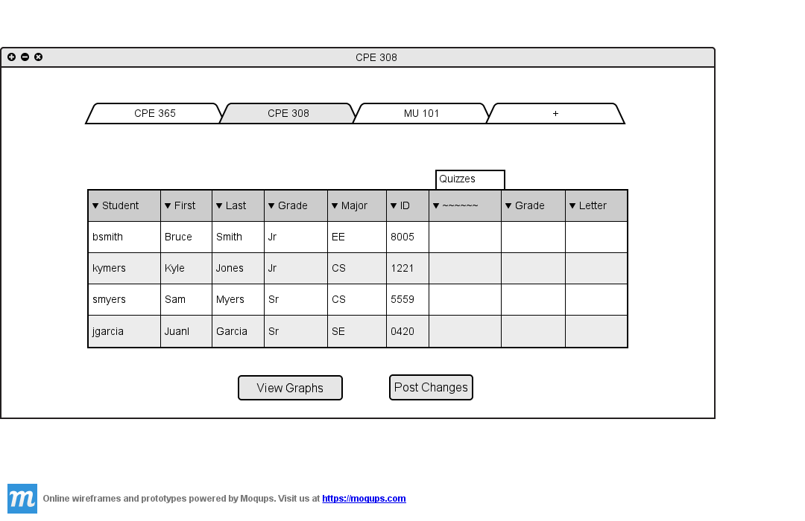

2.4.4 Add Assignment
If the user wants to add an assignments in the spreadsheet shown in Figure 2.4.4 A

Figure 2.4.4 A: Spreadsheet Without Assignment
The user chooses "Add Assignment" from "Assignments" menu or from "Assignments/Categories...", the system shows Figure 2.4.4 A.
Figure 2.4.4 B: Adding Assignment
The user chooses the category in which assignment belongs from the drop down list. The instructor also weight of assignment which is a percentage of its parrent category. Additionally, the instructor specifies the name of the assignment and its due date. The system also provides the option to use the default grading scheme, or manually specify the grading scheme. Furthermore, the instructor can add late policy to the assignment by putting a check mark next to "Set Late Policy" checkbox.
Furthermore, the instructor can specify if the assignment in turned in electronically or not.
Figure 2.4.4 C: Adding Assignment Filled
If the user chose to "Set Grading Scheme", system shows Figure 2.4.4 C.
Figure 2.4.4 D: Grading Scheme
Now the instructor is able to set the grading scheme manually.
Figure 2.4.4 E: Grading Scheme Filled
If the user puts a check mark in the "Set Late Policy" check box, the system out show Figure 2.4.4 E where the user can specify late policy for that assignment.
Figure 2.4.4 F: Late Policy
The instructor can choose to reduce the grade of the students by a percentage(per period) when the students submit thier assigment after the due date is passed. For example, if an assignment is due on 1/11/2013 and the late policy is set to reduce %10 of the grade per day, the student who submits his/her assingment on 3/11/2013 looses %20 of the grade for that assignment. Figure 2.4.4 F shows a sample of filled in late policy.
Figure 2.4.4 G: Late Policy Filled
The result of adding assignment is shown in figure 2.4.4 H;
Figure 2.4.4 G: Assignment Added to Spreadsheet
Prev: Delete Categories
| Next: Edit Assignment
| Up: Manage Assignments/Categories
| Top: index